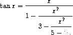

Q. A continued fraction representation of the tangent function was published in 1770 by the German mathematician J. H. Lambert:

where \(x\) is in radians. Define a procedure (tan-cf x k) that computes an approximation to the tangent function based on Lambert’s formula. K specifies the number of terms to compute, as in exercise 1.37.